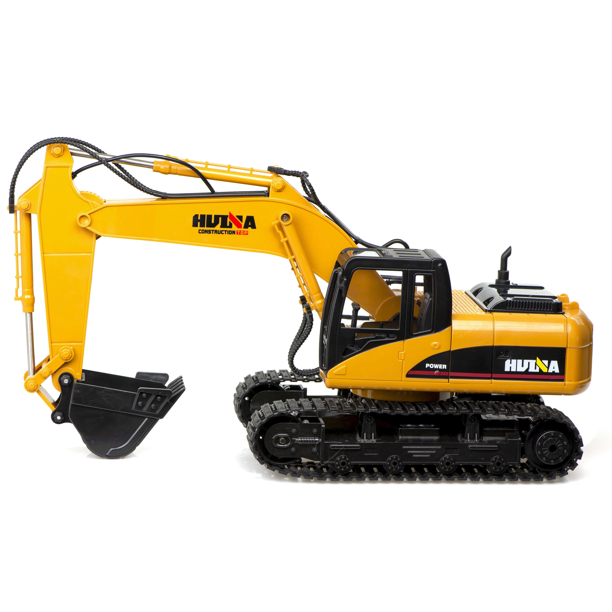

Трактор е самодвижеща се машина с двигател с вътрешно горене (ДВГ), която по своето предназначение служи за преместване или теглене на товари, строителни работи, селскостопанско производство, задвижване на специален прикачен инвентар и много други дейности.
Марка
Година
Ламборгини
1913
Мофак-2
1949
Болгар
1963
Болгар ТК-224-У
1984
Видове трактори
Трактори за селскостопанско производство
Транспортни трактори
Трактори със специално предназначение
Селскостопански трактори
Тракторите с общо предназначение извършват основните видове обработка на земята – плитка (брануване и др.)и дълбока обработка – оран, сеитба и прибиране на реколтата. Особеността при тях е че скоростта на движение е редуцирана от предавателната кутия на 5 – 10 km/h. Мощността на агрегатите за задвижване варират от 40 до 100 и повече к.с. и пътният им просвет е от 250 до 350 mm. Тези трактори могат да се използват и в строителството и за транспорт;
Универсалните трактори са предназначени главно за междуредова обработка при окопните култури (царевица, слънчоглед, цвекло и др.). С тях обаче могат да се извършват и всички видове селскостопанска работа. Тъй като са предназначени за окопни култури, просвета трябва да бъде 650 – 800 mm, за да не повреждат растенията. Към тази група спадат машини с агрегати от 10 до 50 к.с., с малък радиус на завиване и с възможност за изменяне разстоянието между колелата;
Овощаро-лозарските трактори се използват за обработка на лозови масиви и овощни и зеленчукови градини. Тези трактори обикновено са с малки размери и малки агрегати от 2,5 до 20 к.с.
Багери

Багерът е земекопна машина, снабдена с подвижна стрела, на края на която е монтирана кофа. Използва се за копане и повдигане на изкопания материал – пръст или друго. Багерът може да бъде крачещ, верижен или колесен.